Poster:Craft-Aligned Pattern Design for Mosaic Yarncraft,
presented at UIST 2026.
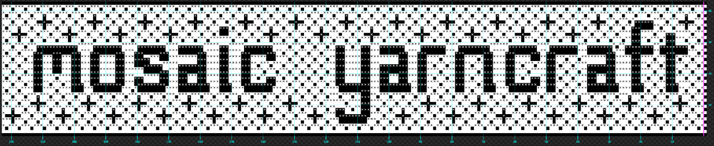
The mosaic colorwork technique for yarncrafts produces intricate multi-colored designs resembling
tile mosaics. Unlike most colorwork techniques, each row of a mosaic project is worked in a single
strand of yarn. The crafter does not need to carry unused strands across the back of the work or
manage numerous bobbins, so stitching progresses quickly and the back of the work shows tidy stripes.
Mosaic charts can be used across multiple crafts, such as knitting and crochet.
With this simplicity comes a limit on the design space. Only two colors are used, and each row has a
designated color. A "wrong-color" stitch is made by extending and connecting the anchor stitches
above and below it, and the anchor stitches must be the correct color for their own rows. Therefore:
Every vertical span of a color must begin and end on rows of that color, and must have an
odd number of stitches. Horizontal runs are unconstrained.
Few tools exist for creating charts that meet these constraints, and designing them by hand is tedious
and error-prone.
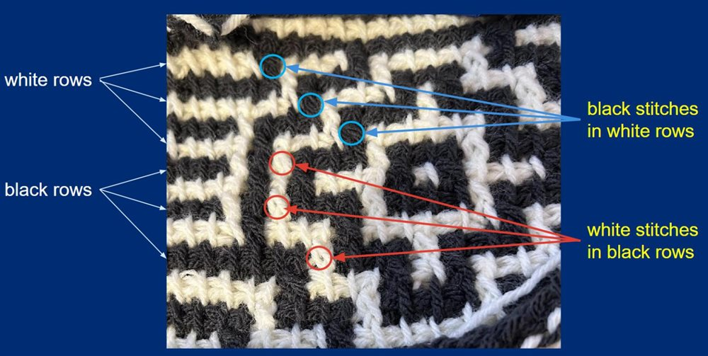
One yarn per row. Wrong-color stitches are formed by connecting anchor stitches above and below.
MoYa ("Mosaic Yarncraft") is a browser-based application that helps yarncrafters create mosaic patterns.
It combines craft-aligned, guided freehand drawing with image-based algorithms. Continuous chart
validation gives immediate feedback so non-compliant designs can be fixed, and chart markup adds
craft- and crafter-specific fabrication details.
Craft-aligned design: configurable stitching direction, row-by-row or in-the-round
design, yarn palette, and stitch and row gauge.
Reference images: trace over a photo or drawing, or convert it to a chart by dithering,
then hand-edit or auto-correct the result.
Immediate feedback: stitches that break the mosaic rules are outlined in red and
updated after every edit.
Cross-craft output: charts can be customized for a specific craft and crafter, or
exported in craft-agnostic formats.
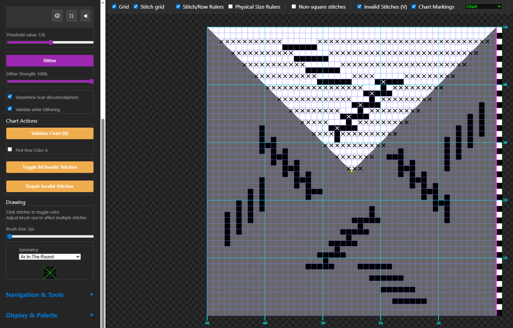
Designing an in-the-round crochet pattern in four diagonal quadrants.
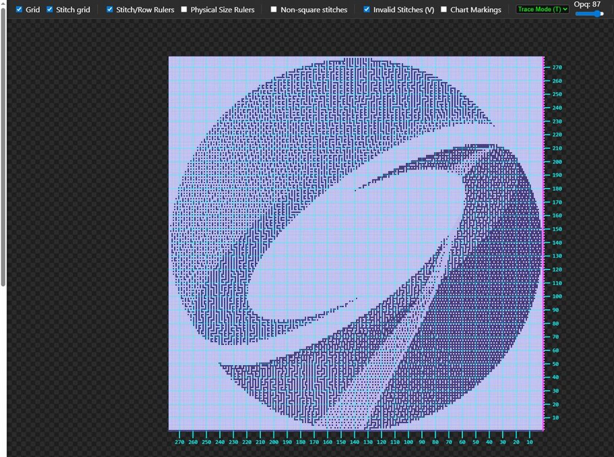
Creating a chart by dithering a reference image.
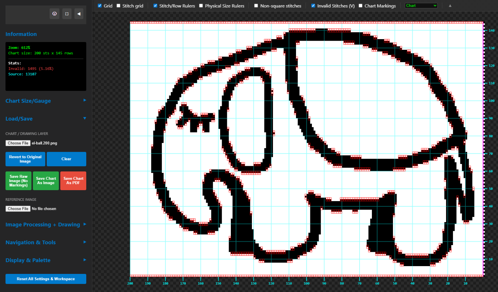
Stitches that violate mosaic constraints are outlined in red.
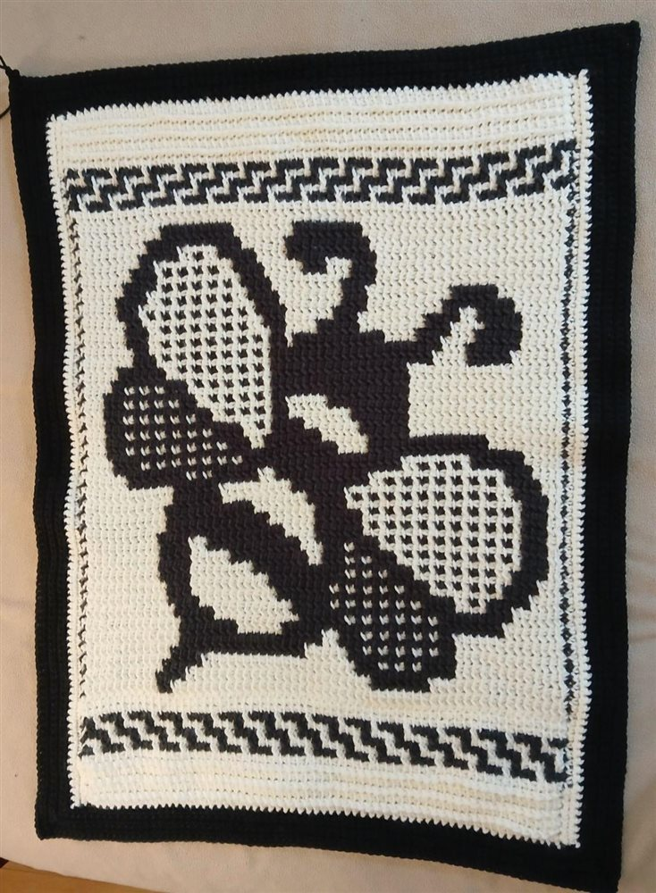
From sketch to chart to yarncraft: a mosaic bee as part of a larger piece.
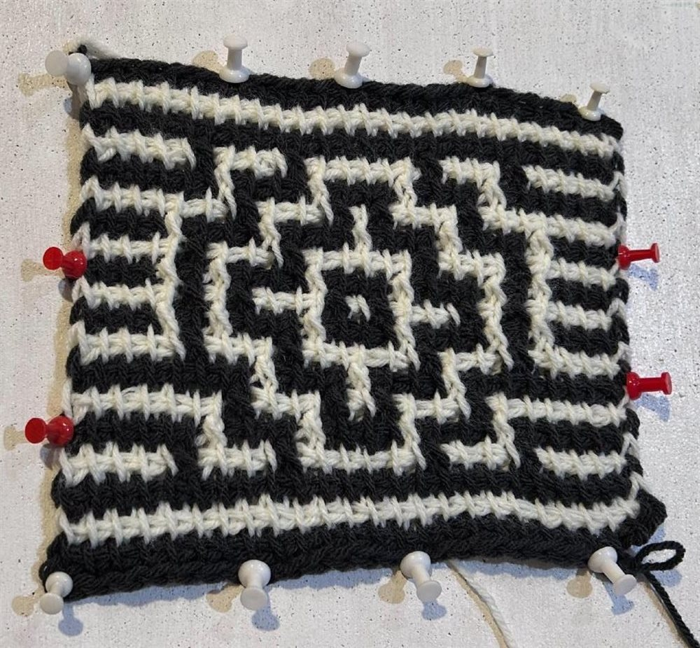
One chart, two crafts: Tunisian crochet single-row front-post mosaic…
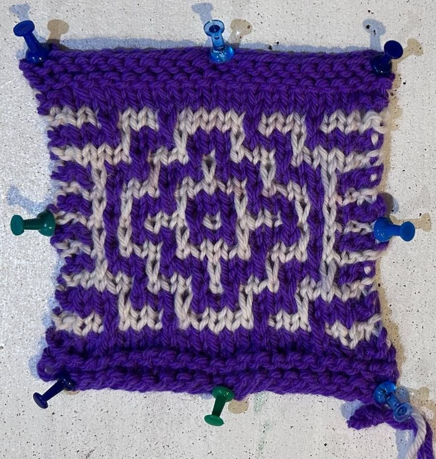
…and knitted double-row slip-stitch mosaic.
MoYa is written in JavaScript, HTML, and CSS. All data stays on the user's computer, and no AI is used
at runtime. (Generative AI assisted in writing MoYa.) It is ongoing work, and feedback is welcome.
Knitted and Crocheted Garments with Unexpected Construction
The Surprise Jacket is knit "flat" -- although it doesn't lie flat! -- in one
piece, entirely in garter stitch. The cast-on edge becomes shoulders and wrists, and the bindoff forms
hem and placket. Off the needles it is an
odd, wavy, unrecognizable shape, with multiple mitered increases and decreases. When it is folded it
forms a boxy jacket. There are only two seams, from shoulder to wrist.
I chose the stripe patterns on my BSJs to showcase the unusual construction.
Even simpler than the Surprise Jacket: essentially a garter-stitch square, with stitches
set aside for the armholes and neck, then folded at key points and joined. This is a popular pattern for
sewing, as it can be cut from a single rectangle of fabric with minimal waste. (Want to Make)
I haven't made a Bog Jacket yet, so the diagrams below are for illustration.
The whole jacket is one huge "circle," worked around and around itself. It is named
for the ouroboros, a snake biting its own tail. With Debbie New's keep-going-until-it's-big-enough
construction, it works at any gauge and in any yarn. Her original is knitted; my small samples translate the
concept into Tunisian crochet and into granny stitch. Alternating two colors was perhaps the worst possible choice
for showing the construction of the granny-stitch sample, so when I make a full-sized one I'll give color layout more thought.
This crocheted lace cardigan is built from hexagons. A six-petal pineapple motif
makes one full hexagon for the back, and partial hexagons form the left
and right fronts. The garment's shape comes entirely from the geometry of the seams
and folds.
My version, inspired by one that YarnAndy wore in a video, is worked in granny stitch.
Hers was mostly solid-colored. I went for more colors as I think they show the construction more clearly.
Worked in one giant loop with a large number of right-angle turns,
this looks nothing like a sweater until it's shaped and seamed. Figuring out how to assemble it is
part of the challenge. (Want to Make)
Project Linus provides handmade blankets to children 0-18 in the United States who are seriously ill, traumatized, or otherwise in need.
I am the webmaster for the
Annapolis, Maryland chapter.
Some of the blankets I've made for Project Linus:
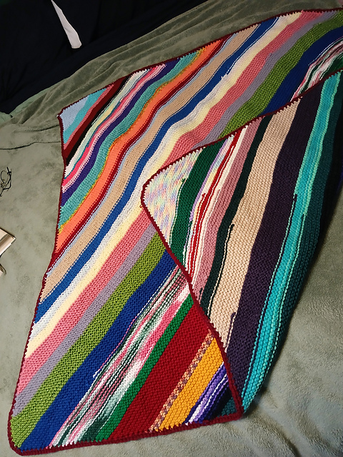
C2C garter scrap blanket (knit)
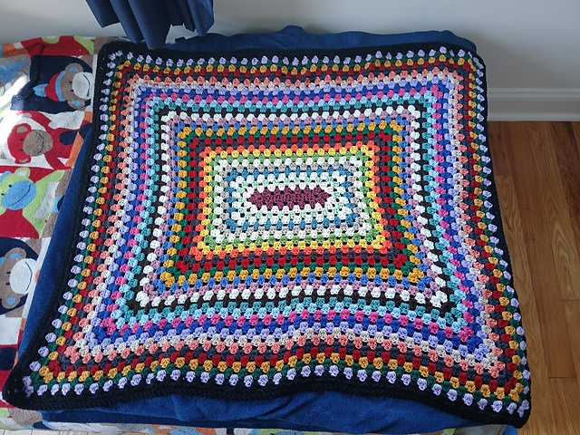
Round robin granny blanket (crochet)
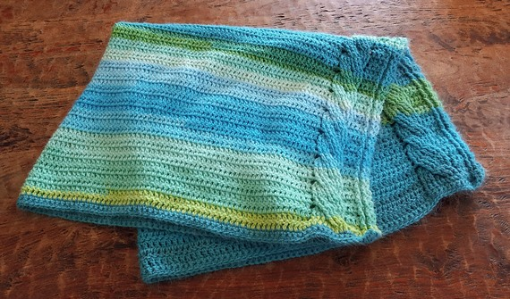
Blue and green cabled blanket (crochet)
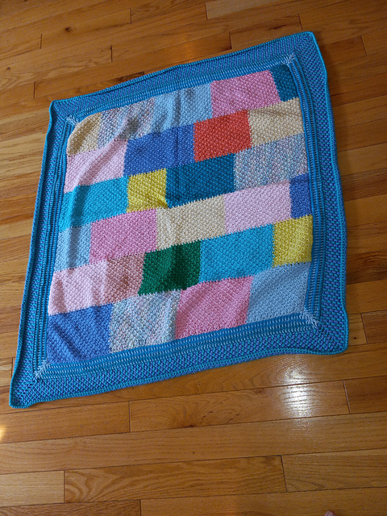
Pastel Tunisian honeycomb blanket (Tunisian crochet)